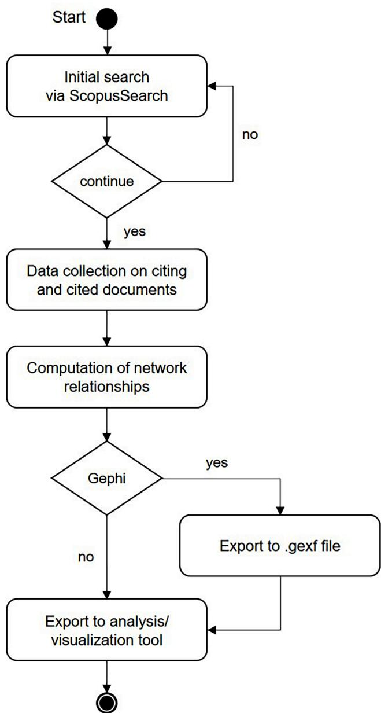
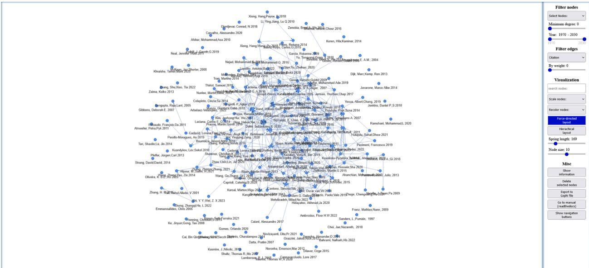
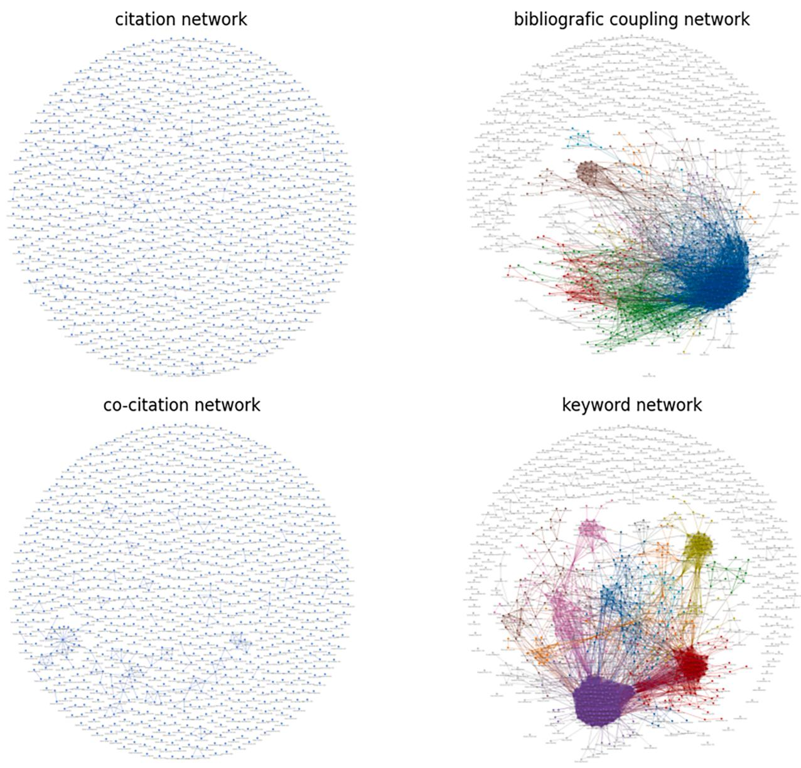
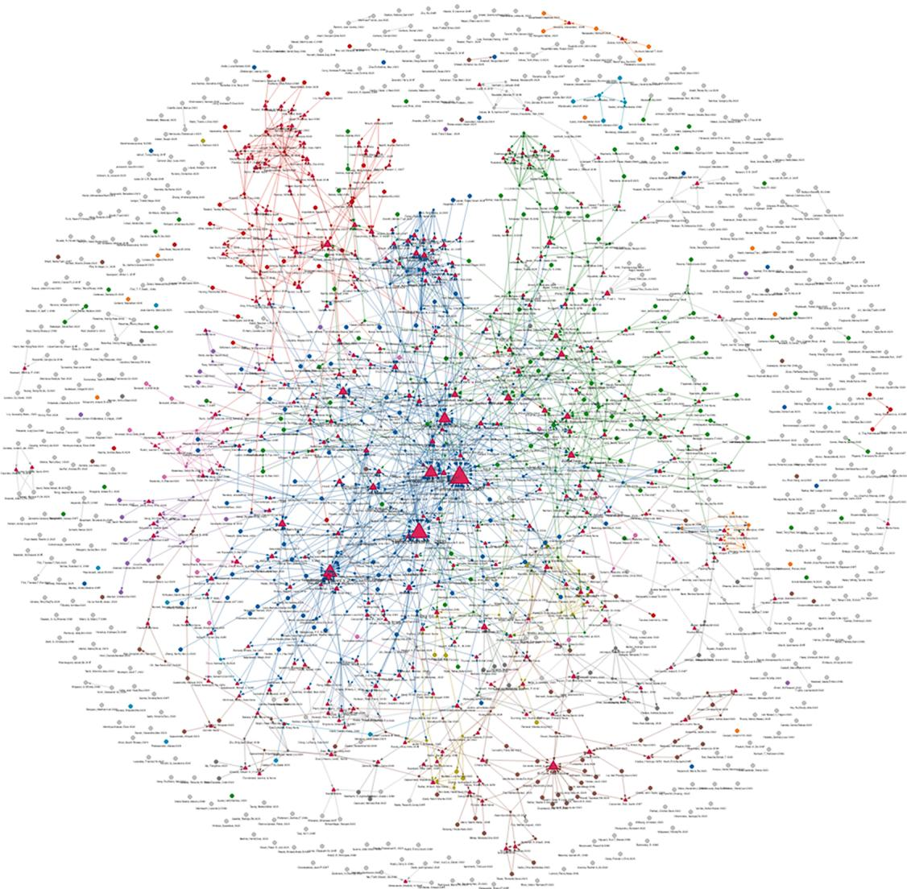

PyblioNet – Software for the creation, visualization and analysis of bibliometric networks¶
Matthias Müller
University of Hohenheim, Stuttgart, Germany
A R T I C L E I N F O¶
Keywords: Network Bibliometrics Science mapping Scopus Python
A B S T R A C T¶
PyblioNet is a software tool for the creation, visualization and analysis of bibliometric networks. It combines a Python-based data collection tool that accesses the Scopus database with a browser-based visualization and analysis tool. It allows users to create networks of publication data based on joint authorship, citations, cocitations, bibliographic coupling, and shared keywords. The overall goal of PyblioNet is to provide valuable insight and context when conducting research, to help users identify areas for further investigation, and to support the development of a robust research framework.
Metadata¶
| Nr | Code metadata description | Please fill in this column |
| C1 | Current code version | V0.8 |
| C2 | Permanent link to code/repository used for this code version | https://github.com/Mat-Mueller/PyblioNet |
| C3 | Permanent link to reproducible capsule | |
| C4 | Legal code license | MIT license |
| C5 | Code versioning system used | git |
| C6 | Software code languages, tools and services used | python, html, javascript |
| C7 | Compilation requirements, operating environments and dependencies | Pybliometrics 3.4.0, NetworkX 2.7.1, VisJs 9.1.6, Python 3.10 |
| C8 | If available, link to developer documentation/manual | |
| C9 | Support email for questions | m_mueller@uni-hohenheim.de |
1. Motivation and significance¶
In recent years, the field of bibliometrics has gained considerable momentum in the research community [1]. Within the field of bibliometrics, scientific mapping is a method of visualizing and analyzing scientific research to identify the structure and dynamics of a field of study [2,3]. It uses the information in bibliometric data to determine the relatedness between publications based on for example shared authors, direct citation, bibliographic coupling, co-citation, or shared keywords.
The general process of scientific mapping includes the two main steps of (1) data-collection (and pre-processing) and (2) visualization and analysis [4,5]. The goal of PyblioNet is to support researchers when performing bibliometric analyses, scoping reviews or in their daily literature searches etc. by combining a Scopus data collection and pre-processing tool with a user-friendly and intuitive analysis and visualization tool. PyblioNet builds on the Python libraries Pybliometrics [6] and NetworkX [7], as well as the Javascript library vis.js [8], and can download publication data directly from the Scopus database via Scopus APIs and visualize/analyze the resulting network using a browser-based tool.
The three main advantages of PyblioNet in contrast to existing software capable of using Scopus data (e.g. Bibliometrix [9] Bibexcel [10], VOSviewer [11], Litstudy [12], CiteSpace [13], or SciMAT [14], see also [4,15] for detailed overviews of bibliometric software) are: (i) the ability to work with unique Scopus identifiers for authors and documents, which avoids the need for complex data cleaning and manual assignment [16,17], (ii) the possibility to collect further information on citing documents, e.g. to determine co-citation relationships, and (iii) the ability to include references and citing documents in the analysis and visualization, e.g. to scope for relevant literature.
More specifically, the main functions of PyblioNet include:
- literature searches based on Scopus advanced query strings
- calculation of publication networks based on shared authors, citation, bibliographic coupling, co-citation and shared keywords
- network manipulation and export of network data
- filtering of network nodes and links (by node type, publication date, degree centrality, network level or link weight)
- visualization and analysis tools (e.g. searching for specific nodes, resizing or recoloring nodes, force-directed or hierarchical layout)

Fig. 1. UML Activity diagram of the Python data collection too
- direct user interaction (e.g. manual repositioning of nodes, node popups with publication’s abstract, access to the full text of a publication via its DOI)
In order to use PyblioNet, users need access to the Scopus database and a valid Scopus API key which needs to be entered upon first usage. After that, the user can start entering Scopus advanced search query strings. After downloading publication data, an HTML file is generated that can be opened in a browser and contains all necessary data and visualization/analysis tools.
2. Software description¶
2.1. CLI data collection¶
PyblioNet consists of two main components. The first component is a Python-based data collection script which is built around the Pybliometrics library [6] to download publication data from the Scopus database via using Scopus Abstract Retrieval API and Search API (Fig. 1).
Users can use PyblioNet by executing a Python script, which requires the installation of the libraries such as Pybliometrics [6], NetworkX [7], etc. Alternatively, users can run the exe file, which includes all necessary libraries. For the first use, users need to enter a valid Scopus API key in order to access the database via Pybliometrics.1 After that, users can start by entering Scopus advanced search query strings.2 PyblioNet will display how many publications were found using the search query and ask the user if they want to continue. If so, the user can continue with a standard setting, or with an advanced mode where the user can decide on the following settings:
- Minimum citation count: exclude search results based on their cita tions. (default: 0).
- Use cached data if possible: download publication data even if it is data cached on your computer. (default: yes).
- Download information about citing papers: downloading informa tion on publications citing the search results is necessary for co citation analysis but takes additional time. (default: yes).
- Create extra nodes for references and citing papers: creating extra nodes for references and citing papers can result in huge networks that may be too large to visualize. If the user chooses “later”, PiblioNet will ask for a minimum occurrence of extra nodes for references and citing papers. (default: yes).
- Download abstracts: downloading abstracts for search results increases the size of the html file and takes additional time. (default: yes).
- Minimum weight for bibliographic coupling: include bibliographic coupling links between publications only if there are at least x shared references (reduces network size). (default: 1).
- Minimum weight for co-citation: include co-citation links between publications only if there are at least x shared citing publications (reduces network size). (default: 1).
- Minimum weight for shared keywords: include shared keyword link between publications only if there are at least x shared keywords (reduces network size). (default: 1).
- Create Gephi file: Creates an additional .gexf file of the network [18] which can be opened in Gephi. (default: no).
More specifically, PyblioNet first downloads information on the initial set of publications via Pybliometrics [6], which accesses the Scopus search API using Scopus advanced search query strings. In a second step, further information on references of the main search results are collected using the Abstract Retrieval API (“FULL” and “REF” view). Finally, citing publications are collected for each main search result via the Scopus Search API again. The publication data is then used to create network data using NetworkX [7] where each publication is represented as a node and relationships between nodes are visualized via links connecting nodes. PyblioNet covers five methods to determine network relationships:
- Shared authorship: nodes are connected if they share one or more authors (using Scopus author IDs).
- Citation: nodes are connected (via a directed link) if one cites the other (using Scopus EIDs).
- Bibliographic Coupling: nodes are connected if they share one or more references (using Scopus EIDs; only for Scopus main results).
- Co-citation: nodes are connected if they share one or more citing papers (using Scopus EIDs; only for Scopus main results).
- Shared keywords: nodes are connected if they share one or more keywords (using author keywords; only for Scopus main results).

Fig. 2. Example of a citation network of 173 main search results.
Finally, a HTML file is created that contains both the network data and the analysis and visualization tools.
2.2. Browser analysis and visualization tool¶
The second component is a HTML / JavaScript analysis and visualization tool building on the VisJs [8] package. The visualization and analysis tool is designed as a browser-based graphical interface that provides a user-friendly and intuitive way to navigate through complex publication data.
PyblioNet also allows for different filtering and visualization methods. First, users can choose to display only publication data from the main search results or also citing and cited publications. Further filtering of nodes can be done based on publication date, or the current degree centrality. Link filtering allows users to easily switch between the five network levels authorship, citation, bibliographic coupling, cocitation or shared keywords [5,19–21]. In the case of bibliographic coupling, co-citation and keyword relationships, links can additionally be filtered by their weight (representing the number of commonly cited or citing literature or keywords).
For visualization, users can enter search queries to highlight nodes where e.g. the search query “agent based and network” will highlight nodes that mention “agent based” and “network” in their keywords, title or abstract. Resizing nodes can be done based on nodes` current degree centrality (and in case of citation networks also based on their in-degree or out-degree) or number of citations. Recoloring of nodes can be done to identify cluster structures within large and dense networks using a Louvain community detection algorithm [21] as implemented by [22], or based on common journals (node colors are also used to identify clusters that are analyzed in more detail using the “Show information” button). The default visualization of nodes is based on a force-directed layout algorithm placing well-connected nodes in the center of the network and less well-connected nodes at the periphery [23]. Users can also choose to use a hierarchical layout where the y-coordinate of nodes in the canvas is based on the publication year, hereby positioning older publications at the top and newer ones at the bottom (in case of a citation network, for example, the hierarchical layout shows the cumulative nature of a research field). By changing the spring length users can define the distance between nodes and the nodes size defines the size of the nodes visualized.
Finally, the “Show information” button opens a new window showing the number of nodes and edges as well as the most frequent keywords and journals. If users have previously colored nodes (based on the Louvain algorithm or common journals), additional information for the communities is displayed. Additionally, users can delete selected nodes (for selecting multiple nodes, press and hold Ctrl), export the current set of nodes in a Gephi compatible format [18], or display additional navigation buttons.
PyblioNet also allows for direct user interaction such as repositioning nodes manually via drag-and-drop, hovering over nodes to get more information such as abstract, keywords etc. as well as highlighting nodes and their direct peers by clicking on a node e.g. to identify related literature. To quickly access the publication directly from the publisher, double-clicking on a node opens a new tab using the publication’s DOI or, if not available, opens google scholar with the publication’s title as a search query.
3. Illustrative examples¶
3.1. Literature search¶
In this section, we illustrate how users can use PyblioNet. A first use case of PyblioNet consists of performing literature searches in order to find, scan and evaluate relevant academic and scholarly articles or books to gather information on a specific topic. To illustrate this, we use the following example search query:
TITLE-ABS-KEY(("innovation diffusion" OR "diffusion of innovation") AND (agent-based OR multi-agent)) AND DOCTYPE(ar) aiming at finding relevant published articles within the field of innovation diffusion and applying the method of agent-based modelling. The search query results in 173 search results and in sum, these articles use 6342 references and are being cited by 1179 publications. After removing duplicates (e.g. two or more documents use the same reference) a network of 173 main documents, 4751 references and 967 citing papers is created (see also Fig. 2).
After opening the network in a browser, users can scan for relevant literature for example, by starting with well-connected or highly cited nodes. After identifying an interesting publication, the five different network levels allow for scanning nodes’ peers (so called snowballing [24]) to identify additional relevant publications. As PyblioNet downloads and visualizes also cited and citing literature, the snowballing, however, is not limited to the initial list of results but may contain further relevant publications not included in the initial search results.
citation network

Fig. 3. Example of articles published in SoftwareX.
3.2. Science mapping¶
A second use case addresses research questions within the broad field of bibliographic analysis and science mapping. For this we chose the example of published articles within the journal ‘SoftwareX’, obtained via the search query “ISSN(23527110)” which resulted in 984 articles using 24.422 references and 17.961 citing papers. Fig. 3 presents the resulting networks for the citation, co-citation and keyword analysis a well as bibliographic coupling.
The citation and co-citation analysis of articles published in SoftwareX show only sparsely connected networks where the majority of nodes remain isolated. This indicates that articles published in the journal neither recognize related articles nor are considered together by articles outside the journal. The bibliographic coupling and keyword analysis, however, indicate a strong common basis and a (perceived) thematical relatedness. A further analysis of the corresponding keywords of the communities in the bibliographic coupling network shows the following information for the two biggest communities.
Cluster: 1. with 177 nodes. Keywords: ‘python’:39, ’machine learning’:19, ’deep learning’:11, ’image processing’:7, ’gravitational waves’:6, ’time series’:5, ’optimization’:5, ’computer vision’:5, ’image analysis’:4, ’data analysis’:4, ’software’:4, ’open-source software’:3, ’tensorflow’:3, ’pytorch’:3, ’feature extraction’:3
Cluster: 3. with 138 nodes. Keywords: ‘python’:12, ’openfoam’:7, ’c++’:5, ’visualization’:5, ’computational fluid dynamics’:4, ’data analysis’:4, ’high performance computing’:4, ’high-performance computing’:4, ’simulation’:4, ’finite element method’:4, ’cfd’:4, ’permeability’:3, ’finite volume method’:3, ’finite elements’:3, ’gpu’:3, ’multiphysics’:3, ’android’:3, ’numerical simulations’:3, ’library’:3, ’turbulence’:3, ’parallel’:3
Finally, analyzing common references connecting articles at the bibliographic coupling level can be done by switching to a citation perspective and including references made by the articles. In Fig. 4 we see the resulting network where important references are highlighted via scaling the node size based on the in-degree of nodes.
4. Impact¶
PyblioNet complements the existing set of software designed to help researchers to perform bibliometric analysis and literature search. It offers a range of useful features that can change how researchers, educators, or institutions engage with bibliometric analysis, literature reviews, and knowledge exploration. By combining data collection and preprocessing with user-friendly visualization and analysis tools, PyblioNet provides a comprehensive platform for gaining deeper insights into the intricate web of scientific knowledge.

Fig. 4. citation network including information on referenced publications.
One of PyblioNet s standout features is its seamless integration with unique Scopus identifiers for authors and documents. This eliminates the need for time-consuming and error-prone manual data cleaning and assignment, resulting in more accurate and reliable bibliometric analyses and allows accessing and incorporating information on citing documents, and thus, co-citation relationships. The potential use cases are widespread and range from identifying gaps in existing research, developing research frameworks, identification of key authors and works, or synthesizing information.
Requirements for using PyblioNet is a valid Scopus API key as well as access to the Scopus API. The Python module exists also as standalone exe file and the visualization and analysis requires only a browser. A main disadvantage of PyblioNet against other software which uses data obtained directly from the Scopus homepage is speed and downloading all information for set of 100 main search results takes up to 15 minutes and more depending on the internet connections.
5. Conclusions¶
In this paper, we presented PyblioNet, a software suite designed to support researchers in bibliometric analysis, scoping reviews, and daily literature searches. PyblioNet is a valuable addition to the bibliometrics field, providing researchers with an efficient and versatile tool for bibliometric analysis, literature searches, and science mapping. By streamlining data collection and offering extensive analysis and visualization capabilities, PyblioNet contributes to a deeper understanding of scholarly interactions and knowledge dissemination, fostering informed decision-making and advancing research in diverse domains.
Declaration of Competing Interest¶
The authors declare that they have no known competing financial interests or personal relationships that could have appeared to influence the work reported in this paper.
Acknowledgments¶
I gratefully acknowledge the support by the members of the computational science hub (CSH) of the university of Hohenheim. In particular, I want to thank Konstantin Kuck, Daniela Bendel and Martin Müller for their help.
References¶
[1] Donthu N, Kumar S, Mukherjee D, Pandey N, Lim WM. How to conduct a bibliometric analysis: an overview and guidelines. J Bus Res 2021;133:285–96. https://doi.org/10.1016/j.jbusres.2021.04.070.
[2] Small H. Visualizing science by citation mapping. J Am Soc Inf Sci 1999;50(9): 799–813. 10.1002/(SICI)1097-4571(1999)50:9<799AID-ASI9>3.0.CO;2-G.
[3] Chen C. Science mapping: a systematic review of the literature. J Data Inf Sci 2017; 2(2):1–40. https://doi.org/10.1515/jdis-2017-0006.
[4] Moral-Munoz ˜ JA, Herrera-Viedma E, Santisteban-Espejo A, Cobo MJ. Software tools for conducting bibliometric analysis in science: an up-to-date review. EPI 2020;29(1). https://doi.org/10.3145/epi.2020.ene.03.
[5] Zupic I, Cater ˇ T. Bibliometric methods in management and organization. Organ Res Methods 2015;18(3):429–72. https://doi.org/10.1177/1094428114562629
[6] Rose ME, pybliometrics KJR. Scriptable bibliometrics using a python interface to Scopus. SoftwareX 2019;10:100263. https://doi.org/10.1016/j. softx.2019.100263.
[7] Hagberg AA, Schult DA, Swart PJ, Varoquaux G, Vaught T, Millman J. Exploring network structure, dynamics, and function using NetworkX. editors. In: Proceedings of the 7th Python in Science Conference; 2008. p. 11 5.
[8] vis.js community. vis.js, 2023. URL: https://visjs.org.
[9] Aria M, Cuccurullo C. bibliometrix An R-tool for comprehensive science mapping analysis. J Informetr 2017;11(4):959–75. https://doi.org/10.1016/j. joi.2017.08.007.
[10] Persson O, Danell R, Wiborg-Schneider J. How to use Bibexcel for various types of bibliometric analysis. Celebrating scholarly communications studies: A festschrift for Olle Persson at his 60th birthday 2009:9 24. https://portal.research.lu.se/ws files/5902071/1458992.pdf.
[11] van Eck NJ, Waltman L. Software survey: VOSviewer, a computer program for bibliometric mapping. Scientometrics 2010;84(2):523–38. https://doi.org/ 10.1007/s11192-009-0146-3.
[12] Heldens S, Sclocco A, Dreuning H, van Werkhoven B, Hijma P, Maassen J, et al. litstudy: a Python package for literature reviews. SoftwareX 2022;20:101207. https://doi.org/10.1016/j.softx.2022.101207.
[13] Chen C, CiteSpace II. Detecting and visualizing emerging trends and transient patterns in scientific literature. J Am Soc Inf Sci Technol 2006;57(3):359–77. https://doi.org/10.1002/asi.20317.
[14] Cobo MJ, Lopez-Herrera ´ AG, Herrera-Viedma E, Herrera F. SciMAT: A new science mapping analysis software tool. J Am Soc Inf Sci Tec 2012;63(8):1609–30. https:/ doi.org/10.1002/asi.22688.
[15] Cobo MJ, Lopez-Herrera ´ AG, Herrera-Viedma E, Herrera F. Science mapping software tools: Review, analysis, and cooperative study among tools. J Am Soc Inf Sci Tec 2011;62(7):1382–402. https://doi.org/10.1002/asi.21525.
[16] Strotmann A, Zhao D. Author name disambiguation: What difference does it make in author-based citation analysis? J Am Soc Inf Sci Tec 2012;63(9):1820 33 https://doi.org/10.1002/asi.22695.
[17] Baas J, Schotten M, Plume A, Cot ˆ ´e G, Karimi R. Scopus as a curated, high-quality bibliometric data source for academic research in quantitative science studies. Quant Sci Stud 2020;1(1):377–86. https://doi.org/10.1162/qss_a_00019.
[18] Bastian M, Heymann S, Jacomy M. Gephi: an open source software for exploring and manipulating networks. ICWSM 2009;3(1):361–2. https://doi.org/10.1609/ icwsm.v3i1.13937.
[19] Chang YW, Huang MH, Lin CW. Evolution of research subjects in library and information science based on keyword, bibliographical coupling, and co-citation analyses. Scientometrics 2015;105(3):2071–87. https://doi.org/10.1007/s11192- 015-1762-8.
[20] Boyack KW, Klavans R. Co-citation analysis, bibliographic coupling, and direct citation: Which citation approach represents the research front most accurately? J Am Soc Inf Sci Tec 2010;61(12):2389–404. https://doi.org/10.1002/asi.21419.
[21] Blondel VD, Guillaume JL, Lambiotte R, Lefebvre E. Fast unfolding of communities in large networks. J Stat Mech 2008;(10):P10008. https://doi.org/10.1088/1742- 5468/2008/10/P10008. 2008
[22] Corneliu S., Louvain community detection for Javascript, 2020, [online] Available: https://github.com/upphiminn/jLouvain.
[23] Jacomy M, Venturini T, Heymann S, Bastian M. ForceAtlas2, a continuous graph layout algorithm for handy network visualization designed for the Gephi software. PLoS One 2014;9(6):e98679. https://doi.org/10.1371/journal.pone.0098679.
[24] Wohlin C, Runeson P, Neto PMS, Engstrom ¨ E, I CM, de Almeida ES. On the reliability of mapping studies in software engineering. J Syst Softw 2013;86(10): 2594–610. https://doi.org/10.1016/j.jss.2013.04.076.